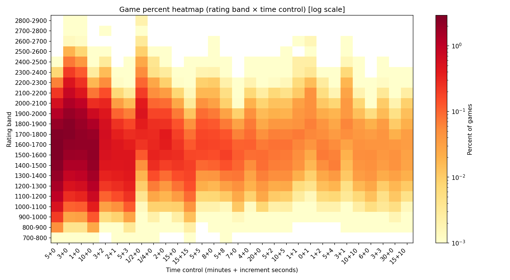
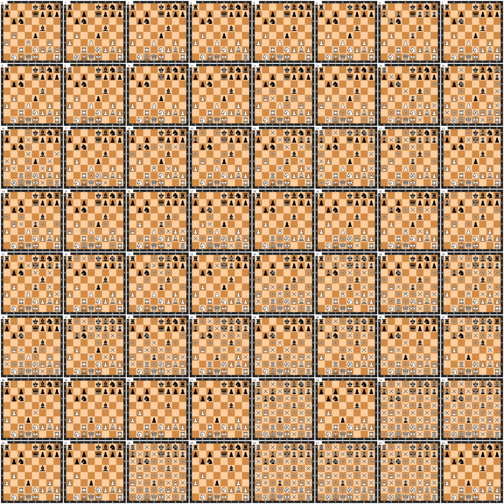
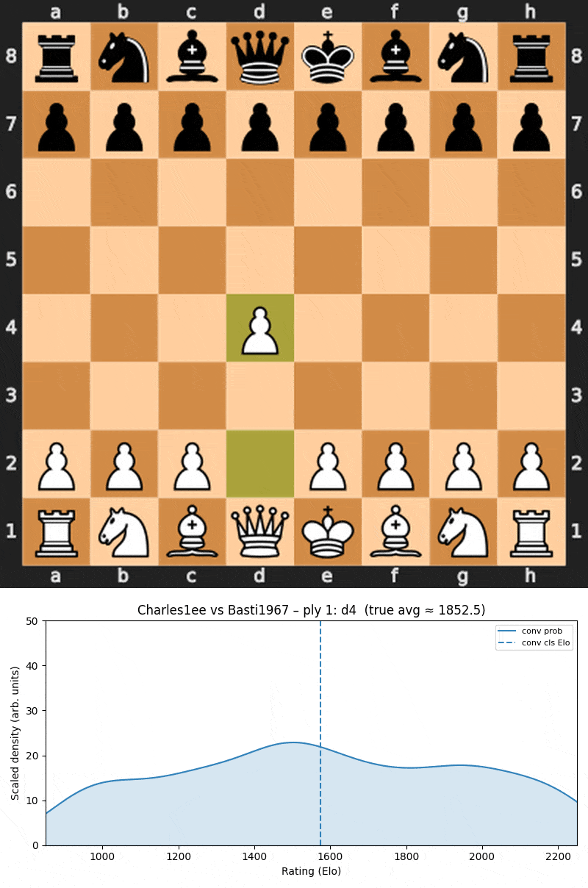

A result tells us who won. A sequence of decisions tells a richer story.
Rating Your Moves asks how much we can infer about a player’s strength from the moves they choose—and how certain we should be. The board is visible. The decision is observable. The ability behind it is hidden.
“The mistakes are all there on the board, waiting to be made.”
Savielly Tartakower
The data
Start with
human decisions.
The study focuses on Lichess 5+0 blitz games, with ten 200-point rating bands spanning 400–2400. Balanced training samples keep common ratings from dominating; an unbalanced test sample preserves the natural rating mix.
“Chess is the art of analysis.”
Mikhail Botvinnik

The representation
One board.
Sixty-four views.
To us, a position is one chessboard. For a rating classifier, each half-move becomes a 64 × 8 × 8 representation of piece locations, square control, and the change made by the move.
These layers reveal the structure of a decision. Neural classifiers turn them into a distribution over rating bands, using the two players’ average rating as the training target.

The evidence
A belief that moves
with the game.
Move-level predictions combine into an evolving rating distribution. A familiar move may tell us little; a distinctive decision may shift the estimate.
Following the whole distribution keeps uncertainty in view. Its shape matters alongside its center: how much does this move tell us, and how much remains unknown?
A game, move by move

The inference
Turn the
question around.
A complementary route starts with a skill-conditioned move model: what would a player of a given strength play? The interactive example asks the inverse question—which strengths make these observed moves plausible?
Using Maia-3’s 5M human-move model, it tracks White and Black separately. Evidence is tempered, with a per-move trust cap, so a single decision has limited influence.
An exploratory case study: one Chess.com game, evaluated on a Lichess rating scale. The estimates and uncertainty need validation across players and games; they are not official ratings.